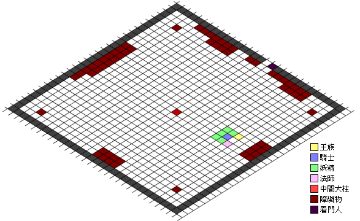

月族中秋血盟PvP大賽注意事項
- 我們會用5妖1騎1王1法，或4妖2騎1王1法的陣容應戰。
- 我們用較多妖精的原因是因為妖精可以不停地高治->魂轉->等一會->高治，妖精群會有較好的續戰力。
- 妖精要識得唔洗按CTRL便能攻擊的方法（按Ctrl，在Chat Box按一下Mouse），這樣便可以一面攻擊，一面用高治魂轉。
- 請用中間鍵來使用高治（指向要補血的隊友，然後按中間鍵），這樣便不會中斷攻擊，請在NuMen中將Mouse中間鍵Set做高治的Hotkey。
- 切勿將高治或魂轉及其他重要道具或魔法Set做F10 Hotkey，因為F10是有少許Bug的，假如Chat
Box有文字或游標便不可以使用F10 Hotkey。
- 每人大約會有20支橙水，請Set 40%爆橙，當有隊友HP在50%-70%時請幫他補高治。
- 在戰鬥前請將不必要的Hotkey移除，例如回家卷和隨傳，以避免按錯。
- 妖精請使用+7十字弓，騎士用+7瑟劍及帶備+7貝卡，同時亦要帶少許磨刀石。
- 妖精和騎士主要是負責攻擊，法師則只用幫防回HP和相消，王族則負責發號施令。
- 所有Lv1至Lv3的魔法請用魔法卷軸，留番MP作回血之用。
- 妖精一定要長期綠+餅+通暢狀態。
- 切物浪費MP使用攻擊魔法，盡量將MP留作高治之用。
- 以上內容可能會更改，請留意最新的宣佈 o.o
- 終極絕招：每人請帶備100以上中治卷軸，咁就有好多血打 ＝．＝
- 以下為奇岩格鬥場地圖及我們可能會用到的陣式（陣式可能會更改）
